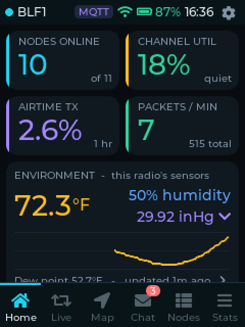
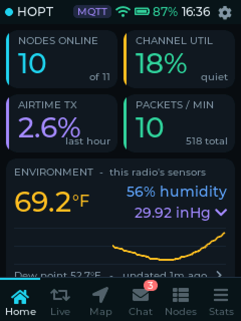
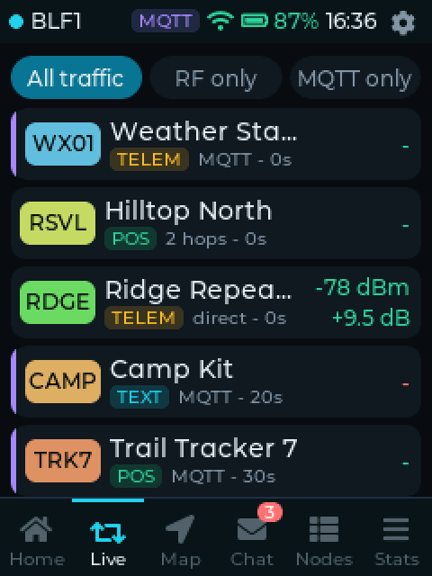
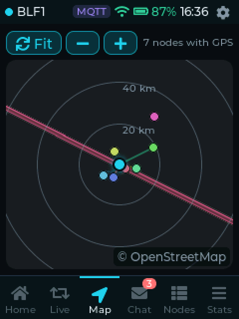
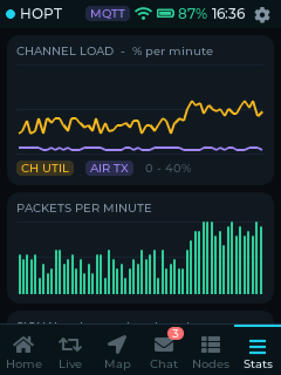
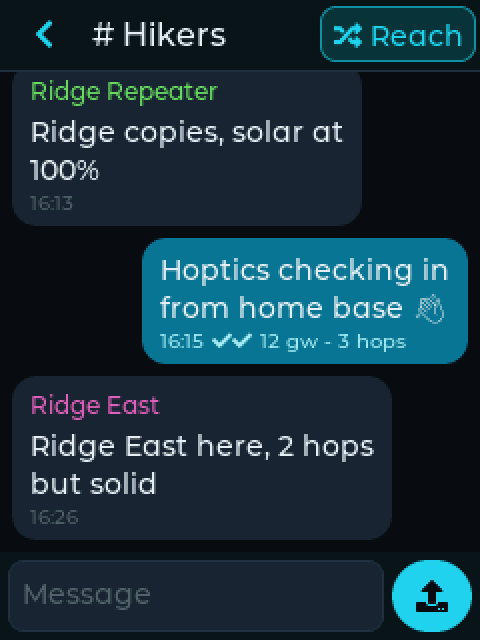

Live traffic
Every packet as it's heard: who sent it, what it is, how many hops, and the signal. Filter RF or MQTT.
TOUCH FIRMWARE FOR MESHTASTICBETA
Hoptics replaces the stock screen on supported Meshtastic nodes with a full touch interface: live traffic, a map, chat, stats and sensor readings, all on the device with no phone needed. Pick your node and flash it from your browser.


WHAT YOU GET
Every packet as it's heard: who sent it, what it is, how many hops, and the signal. Filter RF or MQTT.
Nodes plotted on a street map with range rings. Each packet pings its sender so you can see where traffic comes from.
Channels and direct messages with an on-screen keyboard, delivery ticks and message pop-ups.
Channel load, airtime, packets per minute, signal history and the top talkers on your mesh.
Midnight, Daylight for full sun, Night-red to protect night vision, and Amber. Compare them.
Plug-in BME280 and GXHTC3 modules put temperature, humidity and pressure on Home, with a 24-hour graph.
Send a message and see how far it got: MQTT gateways that heard it, counted by hops. Set up MQTT right on the radio.
On Wi-Fi, open the radio's address for live tiles, map, traffic, sensors and the Reach logger, with CSV export.
Built-in towns, no internet needed: "Now in" when you arrive somewhere, and "13 km NE of" for other nodes.
THEMES
Choose a theme in the setup wizard or in Settings. These are the same five screens in each theme, rendered from the firmware itself.
The default. Dark background with bright accents for indoor and evening use.





FIRMWARE
Choose your node. Flash it in the browser, or download the files to flash by hand. All releases are beta for now.
Loading the node list…
Choose your board on the flasher page.
Use a data USB-C cable and Chrome or Edge.
The setup wizard gets you on the air.
UPDATES